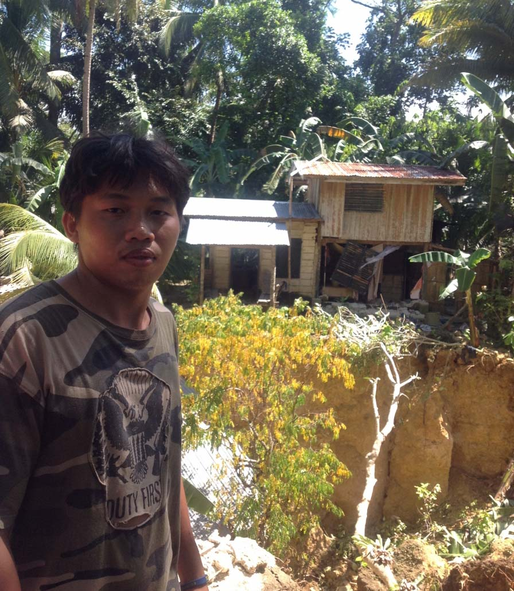

10月13日「国連国際防災の日」を前に、OCHAが運営する情報サービス、IRINニュースが配信した記事をご紹介します。
今年のテーマは「障がいと共に生きる人々と災害」。どのようにすれば災害時に障がいを持つ方々のいのちを守り、また適切な緊急支援を行うことができるのでしょうか。東日本大震災の経験も含め、ぜひ議論を深めていきたいと思います。
------------------------
2013年9月16日付 ネパール・カトマンズ発
昨年アフリカのサヘル地域は、過去最悪となる干ばつに見舞われました。今年に入ってマリ北部や中央アフリカ共和国の治安情勢が悪化し、ダルフールからの難民流入も加わるなど、今も極端に脆弱な状況が続いています。一方支援に必要な資金は、半分しか集まっていません。「今ある人道ニーズを満たし今後の被害を減らすためにも、結果がすぐに目に見える分野のみならずバランスの取れた支援が必要。」サヘル地域担当・国連人道調整官ロバート･パイパー氏が国連総会で訴えています。(日本語字幕付)
国連総会に伴って開催されていた会合で、2016年に予定されている初の世界人道サミットに対し、およそ90カ国と市民社会、民間企業の代表ならびに国連関係者が支援を表明しました。また潘基文国連事務総長が、世界人道サミットをトルコのイスタンブールで開催することを発表しました。世界人道サミットは、国際人道支援をより効果的で幅広い参加を伴うものとすべく、将来にわたる人道分野での課題を整理するとともに、今日世界が直面している重要課題に取り組むことを目的としたものです。
第68回国連総会が今週開幕し、シリア危機も中心議題の１つとして取り上げられます。これに先立って、OCHAのヴァレリー・エイモス人道問題担当国連事務次長がインタビューに応えました。化学兵器の問題など、政治的議論の陰に隠れがちな、この紛争の人道面での影響を忘れてはならないとして、各国のさらなる取り組みを訴えています。
2013年7月と9月の2回にわたり、国際協力機構(JICA)による地域総合防災行政研修が行われ、OCHAもこれをサポートしました。この研修は主に日本がこれまでに蓄積した災害対応における教訓と防災ノウハウを世界に役立ててもらおうと、JICA関西が政府開発援助プログラムの一環として行っているものです。7月は中央アジア･コーカサス地域、また9月は中南米やアフリカ、中近東及び東欧の政府災害担当者を対象に、それぞれ神戸で実施されました。
シリアの首都ダマスカスを訪問していたヴァレリー・エイモス人道問題担当国連事務次長が、シリア国内への人道支援を訴えるべく英国ガーディアン紙に寄稿しました。安保理メンバーには人道アクセス確保のため一致して行動するよう訴え、また世界各国には追加の資金提供を呼びかけています。寄稿文を全文日本語訳致しましたので、ぜひご一読下さい。
----------------------
 10月13日「国連国際防災の日」を前に、OCHAが運営する情報サービス、IRINニュースが配信した記事をご紹介します。
10月13日「国連国際防災の日」を前に、OCHAが運営する情報サービス、IRINニュースが配信した記事をご紹介します。 2013年7月と9月の2回にわたり、国際協力機構(JICA)による地域総合防災行政研修が行われ、OCHAもこれをサポートしました。この研修は主に日本がこれまでに蓄積した災害対応における教訓と防災ノウハウを世界に役立ててもらおうと、JICA関西が政府開発援助プログラムの一環として行っているものです。7月は中央アジア･コーカサス地域、また9月は中南米やアフリカ、中近東及び東欧の政府災害担当者を対象に、それぞれ神戸で実施されました。
2013年7月と9月の2回にわたり、国際協力機構(JICA)による地域総合防災行政研修が行われ、OCHAもこれをサポートしました。この研修は主に日本がこれまでに蓄積した災害対応における教訓と防災ノウハウを世界に役立ててもらおうと、JICA関西が政府開発援助プログラムの一環として行っているものです。7月は中央アジア･コーカサス地域、また9月は中南米やアフリカ、中近東及び東欧の政府災害担当者を対象に、それぞれ神戸で実施されました。 シリアの首都ダマスカスを訪問していたヴァレリー・エイモス人道問題担当国連事務次長が、シリア国内への人道支援を訴えるべく英国ガーディアン紙に寄稿しました。安保理メンバーには人道アクセス確保のため一致して行動するよう訴え、また世界各国には追加の資金提供を呼びかけています。寄稿文を全文日本語訳致しましたので、ぜひご一読下さい。
シリアの首都ダマスカスを訪問していたヴァレリー・エイモス人道問題担当国連事務次長が、シリア国内への人道支援を訴えるべく英国ガーディアン紙に寄稿しました。安保理メンバーには人道アクセス確保のため一致して行動するよう訴え、また世界各国には追加の資金提供を呼びかけています。寄稿文を全文日本語訳致しましたので、ぜひご一読下さい。